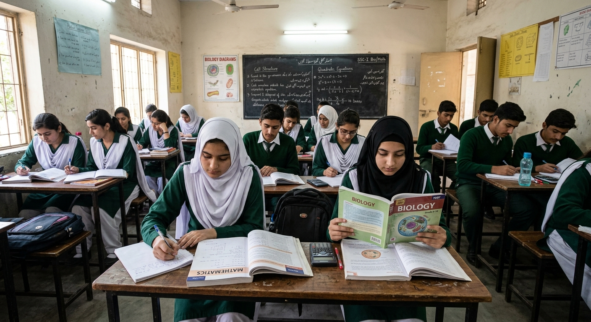
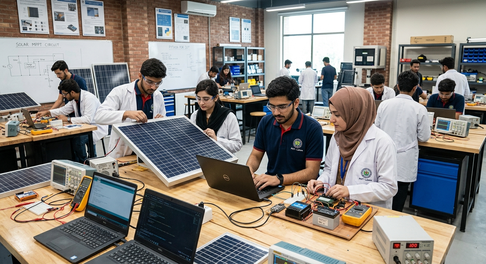

Guidance for Every Stage
Where Are You in Your Journey?
Pick your stage to jump directly into the questionnaire or chat.

Grade 9 & 10
Matriculation
Choose between Science (Biology or Computer Science), Arts, Technical streams, or fast-track 3-month NAVTTC vocational diplomas.
Intermediate / 12th
FSc & A-Levels
Evaluate Pre-Medical vs Pre-Engineering, ICS, I.Com, university entry test strategies (MDCAT, ECAT, NTS), or IT skills tracks.

Undergraduate
University Degree
Identify high-growth specializations in Software Engineering, Cloud, Business, AI, or Healthcare, plus internship preparation.

Graduates & Youth
Graduates & Skills
Upskill through government-funded NAVTTC & Kamyab Jawan certified courses, freelance marketplaces, or renewable solar trades.